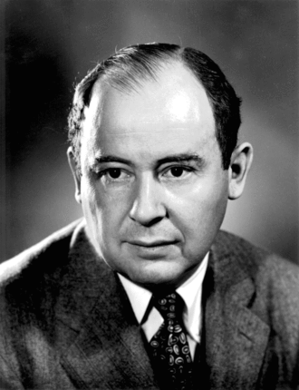
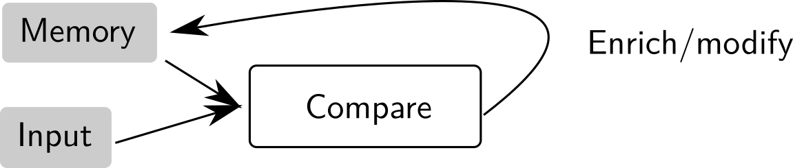
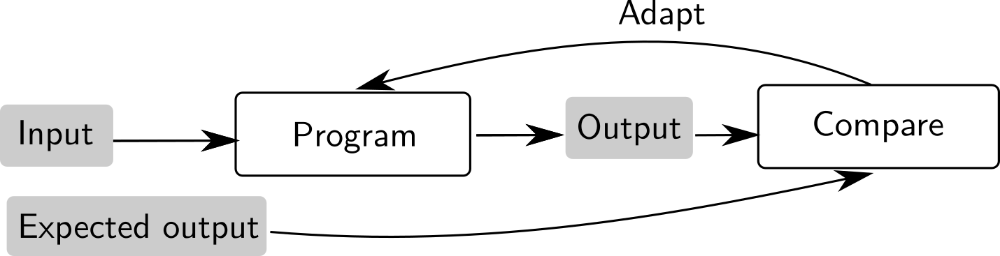
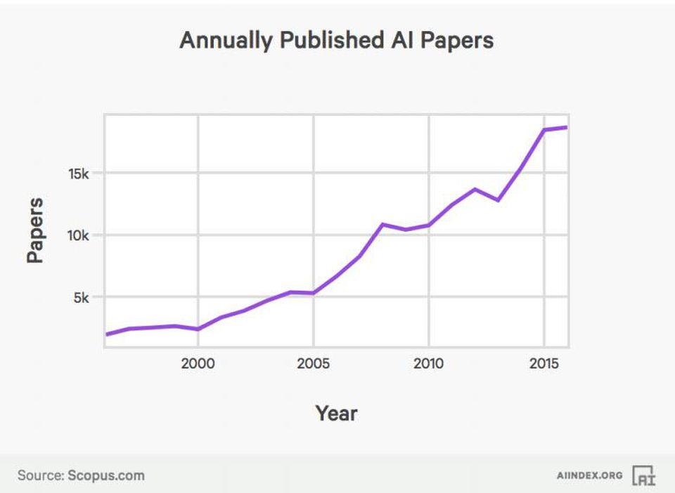
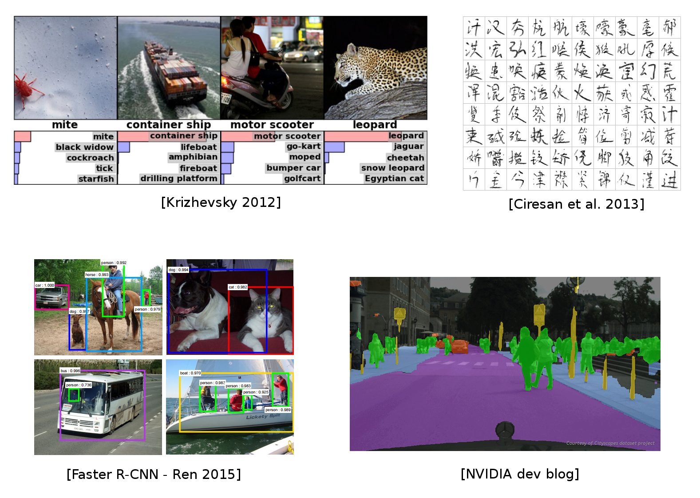
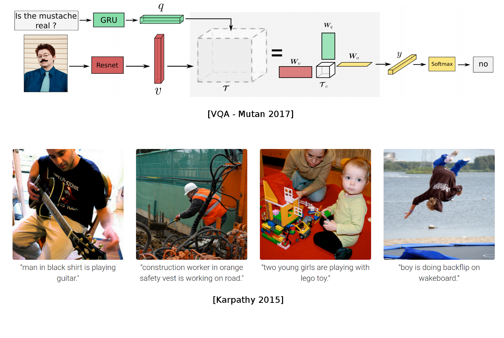
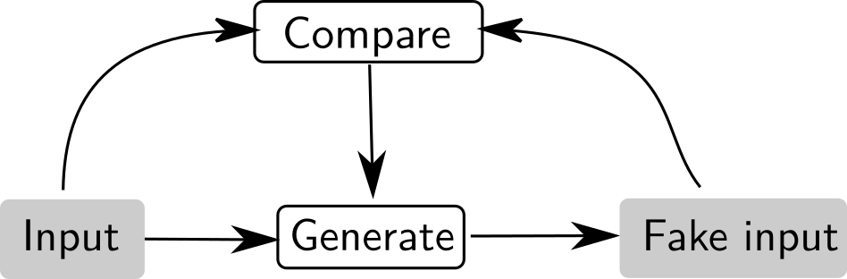
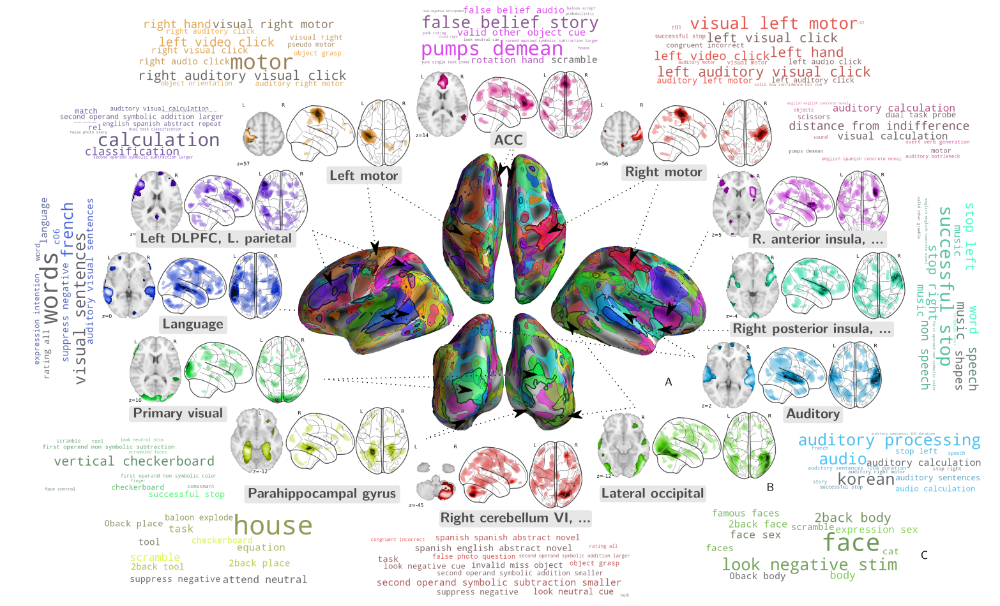

class: center, middle ## Machine learning with Python Pierre Ablin .affiliations[  ] --- ## Course organisation 1) Introduction to machine learning + basics of Python 2) Optimization in Python + Numpy 3) Some machine learning algorithms + Scikit-learn 4) Introduction to deep learning + Pytorch 5) Building a deep learning architecture for image recognition --- ## Plan of this lecture - What is machine learning ? A brief history - Broken locks and recent successes - Computer vision - Text analysis - Speech analysis - Game playing - Human behavior modelling --- ## What is machine learning ? - Term that has become common all the way up to general media (since 2015) - Often heard along the words - "Artificial Intelligence"/"Deep learning" - A century-old concept that I'll try to introduce --- ## What is a machine ? .center[] Standard *computer science* paradigm. Program a.k.a. algorithm <div class='column'> Ada Lovelace</div> <div class='column'>Von Neumann</div> <div class='column'>Alan Turing</div> <div class='column'><img src="images/edsger_dijkstra.jpg" width="100%" />Edsger Dijsktra</div> --- ## How do we learn ? .center[] .center[**Learning by trial and error**] --- ## How do we learn ? .center[] .center[**Learning by organizing new knowledge**] --- ## How do we learn ? .center[] .center[**Learning by comparison with a reference**] --- ## How can a machine learn ? Supervised learning process .center[] Implementing a program that learns from supervision .center[] --- ## Machine learning as a field - A subfield of "artificial intelligence" (computer science), where *intelligence* is acquired from *data* .center[] - Extract information from data: relies on statistics - Training relies on optimization and mathematics --- ## The new boom explained - Computational power .center[<img src="images/gpu_tpu.png" width="35%" />] - Powerful programming frameworks enabling fast research and deployment .center[<img src="images/frameworks.png" width="50%" />] Python at the heart of Machine learning research --- ## The new boom explained - Available datasets and growing data corpus - Money and people .center[ <img src="images/revenues.jpg" width="45%" />] - Private funds from the GAFAM, public funding from Chinese governement --- ## Machine learning is now everywhere 1. Computer vision 2. Speech processing 3. Text understanding 4. Game playing 5. Behavior modelling --- ## Image processing .center[ ] --- ## Image processing .center[  ] .credits[Slide courtesy of https://github.com/m2dsupsdlclass/lectures-labs] --- ## Image processing .center[ <img src="images/vision2.png" style="width: 720px;" /> ] .credits[Slide courtesy of https://github.com/m2dsupsdlclass/lectures-labs] --- ## Text processing .center[ ] --- ## Text processing .center[ <img src="images/nlp.png" style="width: 720px;" /> ] .credits[Slide courtesy of https://github.com/m2dsupsdlclass/lectures-labs] --- ## Text processing .center[ <img src="images/nlp2.png" style="width: 720px;" /> ] .credits[Slide courtesy of https://github.com/m2dsupsdlclass/lectures-labs] --- ## Text/speech processing - GPT-3 [2020] requires only a few examples of a task to generalize. [example](https://pic.twitter.com/HFjZOgJvR8) .center[ ] --- ## Combining modalities .center[  ] .credits[Slide courtesy of https://github.com/m2dsupsdlclass/lectures-labs] --- ## Generating false data .center[ <br> ] --- ## Generating false data .center[ <img src="images/nvidia_celeb.jpg" style="width: 400px;" /><br> [StyleGAN2 2018] ] .center[ <img src="images/WaveNet.gif" style="width: 400px;" /><br> [WaveNet 2017] ] --- ## Generating false data <iframe id="ytplayer" type="text/html" width="640" height="360" src="http://www.youtube.com/embed/p5U4NgVGAwg" frameborder="0"/> --- ## ML for other sciences .center[ ] --- ## ML for other sciences .center[  ] --- ## Playing games .center[ ] --- ## Playing games .center[ <img src="images/games.png" style="width: 720px;" />] --- ## In this course - We will learn to use Python - The goal is to build a system to perform image recognition, from scratch !